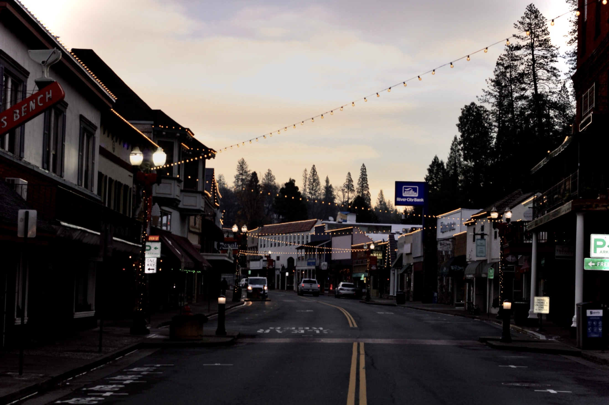

Photography by Tyler Law
Cork Jar
Light, preserved. Editorial, landscape and portrait work made to be kept, not scrolled past. Based wherever the next frame is.

Selected work
A short edit
The approach
Three cameras, one way of seeing. I shoot on a Sony a6300, a Canon Rebel T7, and a Nikon 1 in an underwater housing. The gear is just a means. The work is about light, patience, and showing up when the moment is honest.
What I do
Portrait & lifestyle
→Editorial & street
→Landscape & travel
→Prints & color grades
→Available for commissions